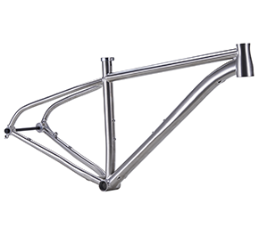

<section id="portfolio">
    <div class="container">
        <div class="center">
            <h2>Titanium Framesets</h2>
        </div>
        <ul class="portfolio-filter text-center">
            <li><a class="btn btn-default active" href="#" data-filter="*">All Frames</a></li>
            <li><a class="btn btn-default" href="#" data-filter=".road">Road</a></li>
            <li><a class="btn btn-default" href="#" data-filter=".mtb">MTB</a></li>
            <li><a class="btn btn-default" href="#" data-filter=".gravel">Gravel</a></li>
        </ul>
        <!--/#portfolio-filter-->
<div class="row">
    <div class="portfolio-items">
        <div class="portfolio-item road col-xs-12 col-sm-4 col-md-3">
            <div class="recent-work-wrap">
                
                <div class="overlay">
                    <div class="recent-work-inner">
                        <h3><a target="_blank" href="Spec-ASCETICdisc.html">ASCETIC Disc <i class="fa fa-hand-o-up"></i></a></h3>
                        <p>Titanium road frame, flat mount disc. DI2 compatible.Tire: 700*28C.</p>
                        <a class="preview" href="images/portfolio/full/ASCETIC-d.png" rel="prettyPhoto"><i class="fa fa-eye"></i> View</a>
                    </div>
                </div>
            </div>
        </div>
        <!--/.portfolio-item-->
        <div class="portfolio-item mtb col-xs-12 col-sm-4 col-md-3">
            <div class="recent-work-wrap">
                
                <div class="overlay">
                    <div class="recent-work-inner">
                        <h3><a target="_blank" href="Spec-TALLYHO.html">TALLYHO <i class="fa fa-hand-o-up"></i></a></h3>
                        <p>Titanium 29” MTB frame, TA 12*148mm dropout.</p>
                        <a class="preview" href="images/portfolio/full/TALLYHO.png" rel="prettyPhoto"><i class="fa fa-eye"></i> View</a>
                    </div>
                </div>
            </div>
        </div>
        <!--/.portfolio-item-->
        div class="portfolio-item gravel col-xs-12 col-sm-4 col-md-3">
            <div class="recent-work-wrap">
                
                <div class="overlay">
                    <div class="recent-work-inner">
                        <h3><a target="_blank" href="Spec-Gravel T.html">GRAVEL T <i class="fa fa-hand-o-up"></i></a></h3>
                        <p>Titanium gravel road frame, DI2 compatible. Flat mount disc. Tire: 700*40C.</p>
                        <a class="preview" href="images/portfolio/full/GRAVEL T.png" rel="prettyPhoto"><i class="fa fa-eye"></i> View</a>
                    </div>
                </div>
            </div>
        </div>
        <!--/.portfolio-item-->
            </div>
       </div>
    </div>
</section>
<!--/portfolio-->
